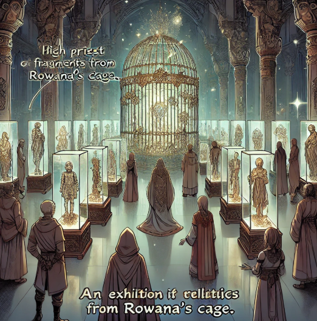

Media, locals, concerned authorities, and temple representatives, along with the high priest, gathered at the location of the incident. The entire cage was now reduced to debris. The forensic team began investigating the remains, searching for anything useful, but they found nothing.
TEMPLE:
A temple is a place where people feel connected to God, where they pray, repent, and seek forgiveness for their sins. In this changing world, after the first blast caused by Rowana, the temple might have been considered the most auspicious and pure place, governed by wise individuals. However, reality was far from this perception.
Illegal organizations operating behind the backs of the people and noble leaders drew their power and support from the temple itself. The temple's high priest was the main facilitator of illegal trading allowances and unauthorized shipments. Without his involvement, such activities would not have been possible in this seemingly righteous society.
High Priest Grieger was once a dedicated candidate for the high priesthood during his teenage years. His hard work and ambition to ascend to the highest seat were commendable and widely admired. However, the rapid rise to power became overwhelming for him, and greed took over. This was when he began using the temple for dark dealings across the nation. Behind the veil of being a chosen servant of God, he committed numerous sins, concealed from the world except for his closest subordinates.
Present Day:
When no useful evidence was found among the debris, Grieger's greed pushed him to take advantage of the situation. He declared, after touching the remnants, that these remains contained good luck and divine blessings, and only the temple could rightfully claim them. In matters of belief, faith, and God, few dare to question—even if it appears unrighteous. The temple seized custody of Rowana's cage remains and encouraged donations from the people in the name of exhibiting the relics.
However, Grieger's true intentions were far from pious. He planned to create fake relics for exhibition in the temple while secretly auctioning the originals in the black market at exorbitant prices for wealthy capitalists.

Meanwhile, in the Forest:
Rowana and Shelly reached the deepest part of a nearby mountain, finally getting a moment to catch their breath. They had a lot to discuss and clarify. Their long conversation helped Rowana understand that she had been trapped for a thousand years, and her appearance had changed to resemble Aurelia, the Goddess of Creation. Shelly, on the other hand, had regained memories of her past life as Sofia and how she had unknowingly lived through reincarnation.
The changes in the world over the past millennium were shocking. Everything had happened so suddenly, transforming their lives overnight. However, the most troubling revelation for Rowana was the impersonation of Sofia by Sylphira, the Goddess of Nature. She was both furious and confused about the gods’ motives—what they wanted to achieve and their purpose in these unfolding events. Everything was a mess, but for now, both friends just wanted to escape the stress and enjoy each other’s company.
Shelly: Rowana, what now?
Rowana: I don’t know! But one thing is certain—I will bring these so-called gods down to earth. They’ve been amusing themselves from above for far too long.
Shelly: And how exactly are you going to do that?
Rowana: Later. I’ll figure it out later. But for now, I want to rest and truly enjoy the time we lost together.
Shelly smiled and began braiding Rowana’s hair.
They decided to continue their journey together, traveling across small villages, towns, and forests. Rowana felt most at ease in nature. They couldn’t return to Shelly’s greenhouse, as it was the closest location to Rowana’s cage and would likely be searched for any leads on the incident. Under the cover of night, Shelly discreetly gathered essentials from her hut without drawing attention, ensuring their journey could continue unnoticed.
They moved forward, embarking on the world tour they had dreamed of a thousand years ago.
Meanwhile, Grieger successfully executed his plan. He sold the authentic remnants of Rowana’s cage under the guise of divine energy confinement while exhibiting counterfeit relics to exploit the townspeople’s faith. His earnings far exceeded expectations, as people blindly placed their trust in him. To further his agenda, he spread rumors that Rowana was a god or a divine messenger. This created a new wave of believers, allowing him to secure even more donations from the upper class.
Two Days Later:
Rowana and Shelly were searching for a place to rest in the forest when they stumbled upon a group of people camping in the middle of the woods. They intended to avoid any interaction, but Shelly accidentally tripped over a branch, falling and exposing their presence.
One of the campers extended a hand to help Shelly up, while another stared intently at Rowana, as if recognizing something peculiar about her.